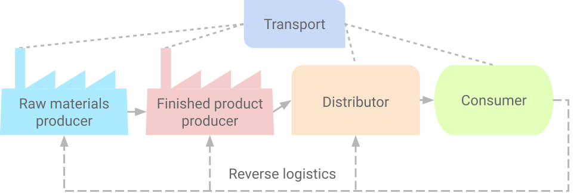
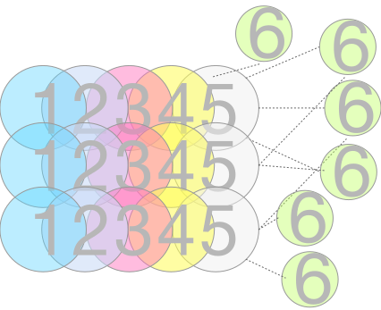

The basics of supply chains
Versions: notes - pdf html source
Main objectives:
- Understanding supply chain objectives and the impact of supply chain decisions on the business results;
- Identifying the main phases of decision-making inside supply chains. Clear out the importance of each phase;
- Identifying the main processes and groups of processes in supply chains.
Keywords: supply chain profitability, supply chain elements, supply chain decisions, supply chain processes
Introduction, aim and objectives of the course
"Supply chain management is a set of approaches utilized to effectively integrate suppliers, manufacturers, warehouses, and stores, so that merchandise is produced and destributed at the right quantities, to the right locations, and at the right time, in order to minimize systemwide costs while satisfying service level requirements.” David Simchi-Levi, 2003
Supply chains (SC) consist of all organizations involved directly or indirectly in fulfilling the requirements of end customers. A supply chain does not only consist of a manufacturer and a supplier, but also includes organizations involved in transportation, warehousing, retailing, as well as the customers themselves. Within any organization—for example, a manufacturer—the supply chain includes all functions involved in fulfilling customer orders. These include new product development, marketing, manufacturing, distribution, finance and customer service.
In a supply chain, a manufacturer receives materials from several different suppliers and in turn supplies finished products to various distributors. Most supply chains are actually supply networks, an example diagram is shown in the following figure:

Figure 2. A simple supply chain structure
Main tasks
Supply chain management (SCM) focuses on automation and optimization of logistics operations throughout the product life cycle, performing the following tasks and functions:
- Supplier relationship management - search for suitable suppliers, evaluation, procurement, cost management;
- Distributors Relationships Management - design and construction of distribution channels, control over the quotation processing;
- Warehousing - stock control, rules for storing goods (often called stock-keeping units (SKU) / products / articles);
- Forecasting - consumption modelling for materials and consumables, modelling of production demand, used for purchases and production planning;
- Pricing - accurate assessment of logistics costs, assessment of added value;
- Distribution - compariing transport means and routes options, warehouse positioning;
- Optimization - reduction of logistics costs (transportation, storage), improving of logistics processes;
- Integration - flow analysis (internal and external material and information flows), research into the possibilities of combining efforts with partners.

Figure 3. Complex integration of the elements in the supply chains
Key drivers of supply chain performance.
- Facilities - warehouses, workshops, terminals;
- Stocks - finished products, blanks, materials, consumables;
- Transport - roads, vehicles, transport routes;
- Information - documentation, databases and knowledge bases, methods for analysis and decision-making, software tools;
- Pricing - Cost Analysis;
- Procurement - vendor relationships, inventory control, supply optimization;
Efficiency of supply chains
SCM - effective integration of resource providers, production, warehouses, stores so that manufactured goods are delivered to end users with minimal costs of the entire system and satisfies customer needs and requirements.
Table 1. Six Target Indicators for Evaluating Supply Chain Performance
|
Purpose (to be delivered...) |
Indicators |
| Product |
the right product |
nomenclature scope, specific products, product customization |
| Quantity |
the right quantity |
indicators of availability, level of service, possibility of wholesale and retail supplies |
| Quality |
the right level of quality |
certificates, integrated quality control systems |
| Place |
in the right place |
territorial scope, positioning, exclusive access to the strategic resource |
| Time |
at the right time |
delivery frequency, response time |
| Expenses |
with minimal costs |
total costs, distribution of costs in the chain |
Products:
- Range of products (how many SKUs it manages)
- Variety (how many different SKU types it manages)
- Products with special characteristics / requirements (short expiry date, dangerous, valuable, ...)
- Links between products (kits, ecosystem)
- Coverage of complex needs (the limits of the spectrum of services)
- Uniqueness of each item - customization - mass production
- Product/assortment renewal cycle
Quantity:
- Capacity (how many customers we can serve)
- Flexibility (no minimum order quantities)
Quality:
- Quality certificates
- Quality consistense
- Service quality
Place:
- Number of operational points in the country
- Dislocation in key locations
- Average distance to the operational point (e.g to the warehouse or shop)
Time:
- Delivery/Service Time
- Time management of inquiries
- Frequency and rhythmicity of deliveries
Cost:
- Price range
- Price stability
- Payment terms
Example:
Compare the efficiency of the following circuits (Ikea and Jysk):
Image sources: IKEA - https://en.m.wikipedia.org/wiki/file:Ikea_logo.svg;
Jysk - https://en.m.wikipedia.org/wiki/File:Jysk_logo.svg;
Conflicts of interests between the participants in the SC
Partners may have conflicting interests that place their relationships in a competitive context. Their relationships are complex because their purpose involves finding the appropriate balance between competition and cooperation. Through their connectivity, the members of the chain create conditions for each of them to concentrate on increasing the value for the end customer and reducing the time and costs of its creation.
A logistics chain (LC) is a group of business entities linked by commercial contracts for joint activity with the aim of delivering goods and services to the customer according to his requirements. The contract may be verbal. If there is no trade contract - there is no logistics chain - these are random transactions, not a logistics system.
In this system two levels are distinguished:
- level of the participant's exchange links and flows;
- level of the production system.
The particiapants control the exchange flows and coordinate thw activities in the production system where resources are used, combined and transformed into output. Due to the pooling of resources, coordination between actors is necessary to realize cost savings, as well as to create innovative changes.
Main Logistics Operations:
- Preparation of goods for transport and warehouse operations;
- Grouping, consolidation;
- Cargo and unloading activity;
- Domestic transport activities.
Logistics services - forwarding, cargo insurance, customs service, building a distribution network and a network for the removal of waste products.
Importance of supply chains for the Bulgarian economy
Factors affecting the economy of Bulgaria in the context of the organization of delivery processes:
- In Bulgaria, low-value goods are sold on foreign markets (EU, USA) with relatively high transport costs;
- The price of raw materials is constantly rising;
- The price of energy resources is constantly increasing;
- Raw materials markets and goods markets for Bulgaria are becoming more and more distant.
Test
Test for the lecture material: https://forms.gle/qtFr15sdfYscYA1cA
Additional reading:
- M. Rakovska. Supply chain management - a factor for competitiveness. Railway transport magazine. (М. Раковска. Управление на веригата на доставките - фактор за конкурентоспособността. Списание Железопътен транспорт original, archive)
- M. Rakovska. Theoretical aspects of supply chain management. 2009. Scientific works UNSS (М. Раковска. Теоретични аспекти на управлението на веригата на доставките. 2009. Научни трудове УНСС original, archive)
{kind=link}
{kind=link}